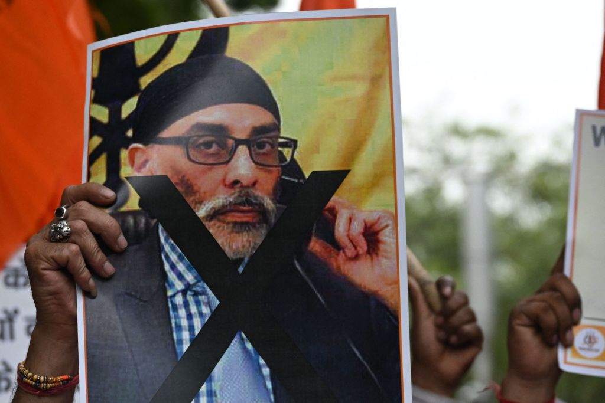
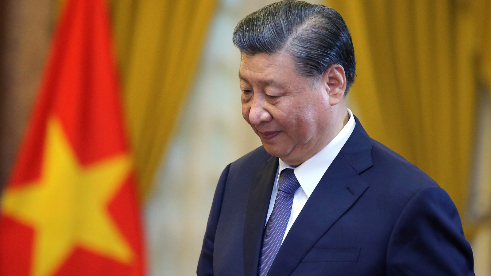
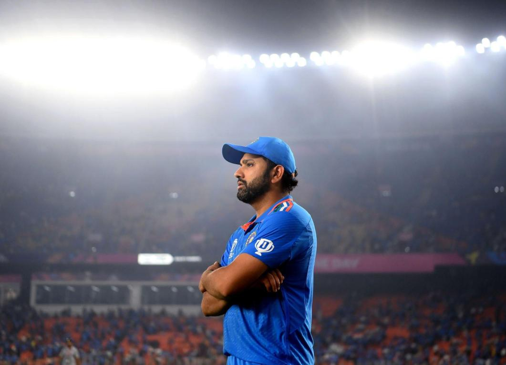

National News
Gupta's arrest in Prague illegal, his extradition to US unsafe: Kin to SC
Court agrees to hear plea seeking Centre's intervention on January 4

THE SUPREME Court agreed Friday to take up on January 4 next year a petition filed by the family of Nikhil Gupta — who is accused by US authorities of plotting to kill Khalistan separatist Gurpatwant Singh Pannun — seeking directions to the Centre to intervene in the extradition proceedings pending against him in Czech Republic, where he is currently under detention.
The plea by a family member — identified only as Mr X — contended that Gupta, 52, “has no roots in the US” and questioned “the veracity of the narrative presented in the second unsealed superseding indictment” dated November 29 filed before a US District Court. It underscored “the absurdity of the notion that the Indian government would engage him in alleged covert operations and assassinations on US soil when he has no connections or business in the country”.
The plea said that since June 30 this year, Gupta “has been in illegal custody of the Czech authorities, facing an alleged political vendetta between the US and Indian governments” and added that his “extradition to the US is unsafe, given the pervasive threat to his life and safety”.
Read more
International News
Decoding China: ‘Wolf Warrior’ diplomacy echoes US mistakes
China's increasingly assertive foreign policy is backfiring and hurting Beijing's image and interests abroad, say experts.

“Philippines should recognize the risks of playing the role US has assigned it,” ran the headline of an editorial published by the state-run English-language newspaper China Daily at the start of December.
The article comes at a time of heightened tensions between Beijing and Manila over their territorial dispute in the South China Sea involving various islands and reefs in the waterway.
Read more
Sports
Rohit Sharma on the disappointment of losing the World Cup final: 'I had no idea how to come back from this.
The first few days I didn't know what to do'
Rohit, speaking on the official Instagram account run by his team, said that he found it hard to digest the
fact that his team fell short of winning what he felt was the ultimate prize in cricket.

India's captain Rohit Sharma walks back to pavilion after his team lost
to Australia by 6 wickets during the ICC Men's Cricket World Cup final match in Ahmedabad, India, Sunday,
Nov.19, 2023.
Rohit Sharma said that it took a while for him to move on from the disappointment of not
winning the ICC Men's Cricket World Cup final but the empathetic reaction from fans he has met has helped him
heal.
Read more
Entertainment
Animal box office collection day 15: Ranbir Kapoor’s controversial film aims for Rs 500 crore domestically, Rs 800 crore worldwide
Animal box office collection day 15: Sandeep Reddy Vanga's controversial film, starring Ranbir Kapoor, will shoot past the Rs 800 crore this weekend.

Actor Ranbir Kapoor’s blockbuster film Animal, directed by Sandeep Reddy Vanga, is targeting the Rs 500 crore mark at the domestic box office this weekend. The film reached a total of Rs 484.34 crore on Friday, its 15th day of release. Animal has been on an indestructible path at the box office amid criticism for its treatment of women and glorification of toxic masculinity.
According to trade website Sacnilk, early estimates suggest that on its 15th day of release, Animal earned Rs 7.5 crore at the Indian box office. However, if the standalone performance is to be gauged, Friday marked the film’s lowest single-day haul. Animal has made Rs 784.45 crore worldwide in the first two weeks of its release, and should be able to pass the Rs 800 crore mark this weekend. Animal will also become the third Bollywood film of the year, behind Pathaan and Jawan, to gross more than $100 million globally.
Read more